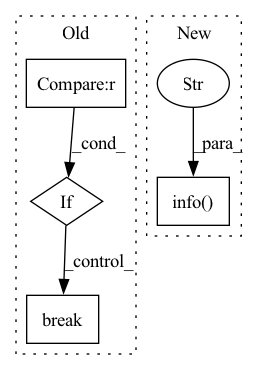

Pattern ID :13407
Before Change
torch.nn.utils.clip_grad_norm_(self.local_model.parameters(), 1)
optimizer.step()
completed_steps += 1
if completed_steps == config.cfg["local_epochs"] :
break
// logging.info(f"Client {self.clientId} complets local epoch: {completed_steps}, loss square: {loss_squre}")
// completed_steps += 1
except Exception as ex:After Change
loss.backward()
torch.nn.utils.clip_grad_norm_(self.local_model.parameters(), 1)
optimizer.step()
logging.info(f"Client {self.clientId} complets local epoch: {completed_steps}, loss square: {loss_squre}" )
completed_steps += 1
except Exception as ex:
error_type = exIn pattern: SUPERPATTERN
Frequency: 3
Non-data size: 4
Instances Fragment ID: 45172000
Project Name: symbioticlab/fedscale
Commit Name: 5d7a8935b95dda1a8c5edc8eaa7e14db04ce9cc6
Time: 2022-03-18
Author: yuxuanzh@h1.heterofl-repo.gaia-pg0.wisc.cloudlab.us
File Name: core/examples/heterofl/customized_client.py
M Class Name: Customized_Client
N Class Name: Customized_Client
M Method Name: train(4)
N Method Name: train(4)
M Parent Class: Client
N Parent Class: Client
M File Name: core/examples/heterofl/customized_client.py
N File Name: core/examples/heterofl/customized_client.py
M Start Line: 48
M End Line: 79
N Start Line: 73
N End Line: 74
Before Change
batch_size = base
for hcn in HCN_LIST:
new_batch_size = base * hcn
if new_batch_size > max_acceptable_batch_size :
break
batch_size = new_batch_size
candidate_batch_size.append(batch_size)
return list(set(candidate_batch_size))
After Change
index = np.argmax(np.asarray(HCN_LIST) > value)
candidate_batch_size.append(HCN_LIST[index - 1] * base)
candidate_batch_size = list(set(candidate_batch_size))
logger.info(f"Candidate batch size: {candidate_batch_size}" )
return candidate_batch_size
def get_valid_gpus(batch_size, micro_batches, min_valid_gpus, max_valid_gpus): Fragment ID: 45171999
Project Name: microsoft/deepspeed
Commit Name: e2b39ded9f3e0316ef57632497568acefcb6231b
Time: 2021-11-22
Author: chunyang.wen@gmail.com
File Name: deepspeed/elasticity/elasticity.py
M Class Name: AnonimousClass
N Class Name: AnonimousClass
M Method Name: get_candidate_batch_sizes(2)
N Method Name: get_candidate_batch_sizes(2)
M Parent Class:
N Parent Class:
M File Name: deepspeed/elasticity/elasticity.py
N File Name: deepspeed/elasticity/elasticity.py
M Start Line: 67
M End Line: 75
N Start Line: 64
N End Line: 74
Before Change
torch.nn.utils.clip_grad_norm_(self.local_model.parameters(), 1)
optimizer.step()
completed_steps += 1
if completed_steps == conf.local_steps :
break
except Exception as ex:
error_type = ex
breakAfter Change
loss.backward()
torch.nn.utils.clip_grad_norm_(self.local_model.parameters(), 1)
optimizer.step()
logging.info(f"{completed_steps} completed, loss square: {loss_squre}" )
completed_steps += 1
except Exception as ex:
error_type = ex Fragment ID: 45171998
Project Name: symbioticlab/fedscale
Commit Name: f2f326f06eefddcebccdba4eadbe8ceb7e3e4037
Time: 2022-03-16
Author: xshen@h1.xsh5cpu.gaia-pg0.wisc.cloudlab.us
File Name: core/examples/fed_hetero/customized_client.py
M Class Name: Customized_Client
N Class Name: Customized_Client
M Method Name: train(4)
N Method Name: train(4)
M Parent Class: Client
N Parent Class: Client
M File Name: core/examples/fed_hetero/customized_client.py
N File Name: core/examples/fed_hetero/customized_client.py
M Start Line: 114
M End Line: 143
N Start Line: 115
N End Line: 140